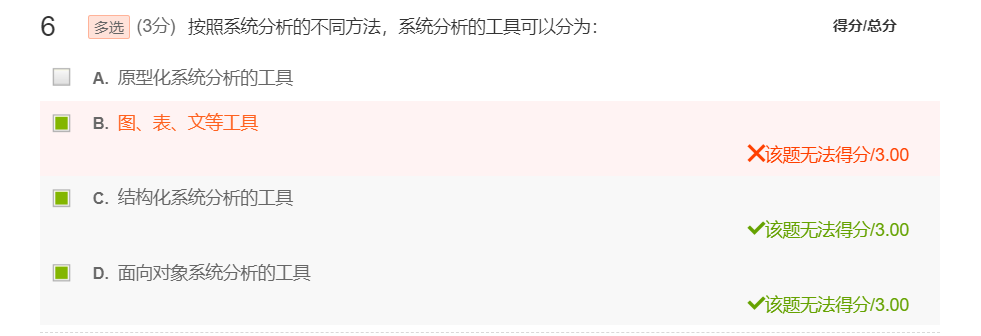

3.信息系统分析
3.1概述
3.1.1信息分析的概念和工具
系统分析是对系统进行描述。
- 对过去的系统、现在的系统和将来的系统进行描述
- 将复杂的系统逐渐拆分的过程，以此来达到更好的理解。
地位：
是SDLC的第二个阶段
是对系统规划的执行，是系统设计的基础
业务和技术的桥梁
回答信息系统是什么的问题
得到信息系统的逻辑模型
面向用户和业务
内容：(调查+分析)
- 需求建模、企业建模、选择开发策略
- 以详细调查为基础
工具：
- 数字、文字、图、表格
- 结构化分析的工具
- 系统流程图…
- 面向对象分析的工具
准则：先总体后局部、自上而下层层分解、模块化
3.1.2系统分析员
- 是系统开发的核心人物，主要承担系统的调查与分析工作
- 进行信息系统分析与设计的高级技术人才
- 是用户和IT技术人员之间的纽带。
主要困难：隔行如隔山；调查与学习
具备的能力：
- 管理能力
- 沟通（理解、表达）
- 技术能力
- IT
- 强于学习
- 敏于感知
- 承担的任务
- 建立系统的逻辑模型
- 承担系统规划、系统分析、系统设计，参与系统实施和系统运维。
- 编写各种系统文档
3.1.3详细调查的概念和目的
详细调查是用户需求的基础
概念：详细调查是采用合适的调查方法与工具，对信息系统所依托的组织进行资源和业务等的详细调查，为需求分析和系统建模服务。
详细调查的内容：
组织机构、用户调查、事务调查、业务调查、问题调查
工作方式：
定性调查、定量调查
详细调查步骤和方法：
步骤：
1、以系统规划的目标和任务为指导。首先要明确系统规划的目标和任务，调查的内容要紧紧围绕系统的任务，以此为指导，来开展详细调查。
2、确定调查的目标。确定我们要做的事情的目标，包括工作范围、工作效率等。
3、准备调查的问题，形成一系列的问题框架，是我们前期准备的重要环节和内容。
4、制定调查的计划和方法。根据要调查的目标和准备调查的问题制定调查的计划和方法，不同的调查方法实施的过程也不同，每一种方法都需要完整的实施过程。
5、实施调查。在制定调查的计划和方法后，按照计划去实施详细调查。
6、评价与反馈。收集材料，对调查结果进行评价与反馈。
7、总结。对调查过程进行总结，形成一定的文档或资料库，丰富详细调查经验。
方法：访谈、实地观察、实践、会议、文档调阅、问卷调查、抽样、研究、BBS等
3.2需求建模
概念：
需求是用户和项目的功能、性能、可靠性等具体要求的总称，是系统的出发点和归宿
也叫需求分析，用图、表、文等工具对不同用户的需求进行描述。
内容：
用户分类：部门、用户组、用户、角色
需求列表：输入、处理、输出、性能、控制、可扩展性、TCO(Total Cost of Ownership)
困难：
确定问题难、需求经常变、需求不完备
详细调查是需求建模的基础，也是克服以上困难的有效办法。
3.2.2需求列表(5+2)
输出：内容、格式、方式、载体、频次给什么人
输入：什么人输入内容、格式、方式、载体、频次
处理：参与者、过程、数据载体
性能：时间、效率、频次、总量
控制：用户级别、访问控制、安全要求
可扩展性：未来的功能
TCO：即总拥有成本，包括产品采购到后期使用、维护的成本。成本效益分析。对多选方案的评估很重要。成本估算往往会低估间接成本
需求建模的形式
3.2.3业务流程优化(BPR) ——处理需求的业务流程优化
业务流程：用户特定活动或某一业务的环节或过程
业务流程优化：对不良的业务流程进行重组。是指对多余的业务流程进行删减，对不足的业务流程进行补充，对重复的流程环节进行整合重组。
业务流程优化是信息系统分析的重要内容；优化的业务流程是优质信息系统的基础；信息系统改善工作、
美化生活
业务流程图可以有效表达处理需求。
3.2.4需求建模的成果
需求建模报告——以详细调查的原始材料为基础
题目—概述—用户分类—需求列表—附录：详细调查资料

3.3 企业建模
建立逻辑模型：
面向结构的：实体关联图、数据流程图、数据字典、处理逻辑说明书、立即存取分析图
面向对象的：UML(统一建模语言)九类图
3.3.1实体关联图（E-R图）
定义：反映实体、属性及实体之间关系的图。描述现实世界的概念模型。
方法：调查资料(详细调查)——需求模型——ER图
3.3.2数据流程图（Data Flow Diagram）
概念：描述数据流态势的图。
- 将数据独立抽象出来，通过图形方式描述信息的来龙去脉和实际流程。
- 是一种能全面地描述信息系统逻辑模型的主要工具。它可以利用少数几种符号综合地反映出信息在系统中的流动、处理和存储的情况。数据流程图具有抽象性和概括性。
组成及符号表示：
外部实体：系统以外的人或事物
数据流：数据流动的方向
处理逻辑：描述数据的逻辑处理功能、数据的变换功能
数据存储：数据保存的地方
分类：
顶层数据流程图（context diagram）：
1. 画在一页中
2. 中间处理逻辑的名是系统的名
3. 每一个图形要素唯一名称
4. 处理逻辑只有一个，唯一编号为0
5. 所有的外部实体描述
6. 所有与外部实体的数据流
7. 线不要交叉
作用：
把与环境之间的关系描述清楚
符合结构化先总体后局部的思想
初步扩展图：
Diagram0 0号图 ：是处理逻辑0的扩展；是顶层图初步细化的一个图，内部包括主要的 处理逻辑、数据流和数据存储。
保留顶层数据流程图的所有外部实体 7+-2
逐步细化的下级数据流程图
数据流程图画法：从左到右画；从外到里画；从总体到局部；依据现行系统的业务流程图（总纲）
原则：
先总体后局部
均匀分解，直到基本的处理逻辑
数据守衡
父图和子图平衡
适当命名

3.3.3数据字典
概念：对数据流程图中的各个成分的含义进行描述的工具；实质上是关于系统数据的数据库
用途：对数据流程图的补充说明、参照，用于检索，也可以检验一致性与完整性。
分类：数据元素（最基本）、数据结构、数据流、数据存储、处理逻辑、外部实体
3.3.4处理逻辑说明书
概念：对数据的逻辑处理功能或对数据变换的详细描述
作用：
是一个详细的说明；
说明转换的策略与转换路径：输入数据流、及其间的处理步骤
要求：
简单明晰、标准
1、处理逻辑说明的工具——结构化语言
一种用户描述处理逻辑的介于自然语言和程序语言的语言
三种基本的语句：祈使句、判断语句、循环语句
2、处理逻辑说明的工具——判断树（决策树）
直观、简洁
3、处理逻辑说明的工具——判断表
二维表；适合处理条件较多的逻辑
3.3.5立即存取分析图
概念：
根据用户对数据存取的要求，用图形方式来表达数据的存取路径
以数据存储为基础，以用户需求为导向
3.3.6成果与开发策略
企业建模的结果—>逻辑模型说明书
开发策略选择：
绝大多是信息系统都是基于Web的。
基于云的信息系统建设是趋势
自主开发
由自己的技术人员完成系统的开发。
外包
信息系统外包是指付费借助外部力量进行信息系统开发、建设的信息系统建设方式。主要包括全 部外包、部分外包。
联合开发：由企业与其他开发组织协作，共同开发信息系统的方式。
购买软件：购买现成的软件或软件包，定制或安装形成信息系统的方法。横向系统一般都采用购买软件的方式。
购买服务：“云”可以提供三种服务(SaaS、IaaS、PaaS)。按月或按年缴费。

需求获取方法：
联合应用开发(JAD)——人员都参加
最终成果——需求说明书
快速应用开发(RAD)
最终成果——新信息系统 new information system